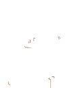
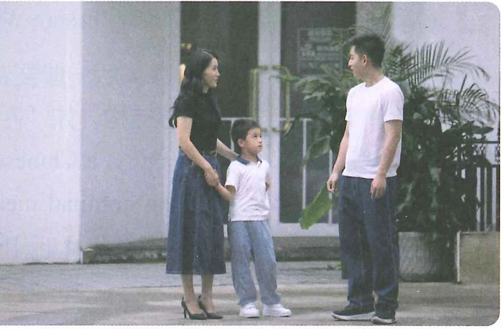
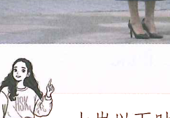

课文 3Text 3Текст 3
在街上， 王一雪带着儿子偶遇杨同乐。On the street, Wang Yixue ran into Yang Tongle while she was out with her son.На улице Ван Исюэ с сыном случайно встретила Ян Тунлэ.
听两遍对话， 选择正确答案。Listen to the dialogue twice and choose the correct answer.Прослушайте диалог дважды и выберите правильный ответ.
(2)王一雪女儿今年（ ）岁。 A 五 B 十二 C 二十Wang Yixue's daughter is ( ) years old this year. A five B twelve C twentyДочери Ван Исюэ в этом году ( ) лет. A wǔ B shí'èr C èrshí
 Wáng Yīxuě王一雪Wáng Yīxuě杨同乐Wáng Yīxuě王一雪
Wáng Yīxuě王一雪Wáng Yīxuě杨同乐Wáng Yīxuě王一雪

Yang Tongle: Is this your son?
Wang Yixue: Yes. I have two children, a son and a daughter.
Yang Tongle: How old is your son?
Wang Yixue: He is five years old.
Yang Tongle: How old is your daughter?
Wang Yixue: She is twelve.
Ян Тунлэ: Это ваш сын?
Ван Исюэ: Да. У меня двое детей, сын и дочь.
Ян Тунлэ: Сколько лет вашему сыну?
Ван Исюэ: Ему пять лет.
Ян Тунлэ: Сколько лет вашей дочери?
Ван Исюэ: Ей двенадцать.